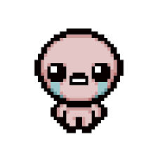

In this site, there's many descriptions and uses for a lot of the items in The Binding of Isaac. There are over hundreds of items in the game but a guide for some of them can help many players who are just starting out. Isaac is a rogue-like that I happen to really enjoy, and I think Mckay Ellis likes it too. Mckay Ellis is so sick bro that's goat right there. Along with Mckay Ellis being the goat, Isaac is pretty cool too. I guess you could say I'm somewhat of a gamer!!!
Isaac is also one of my favorite games that I played with my brother all the time, which is why I like it so much. Other than that this home page is kind of just a bunch of jargain to fill up space and all of the actual content is in the other pages. Fun fact though I've played this game since I was like 8 and went through all the updates and different versions of the game. It's pretty cool to see it all change.